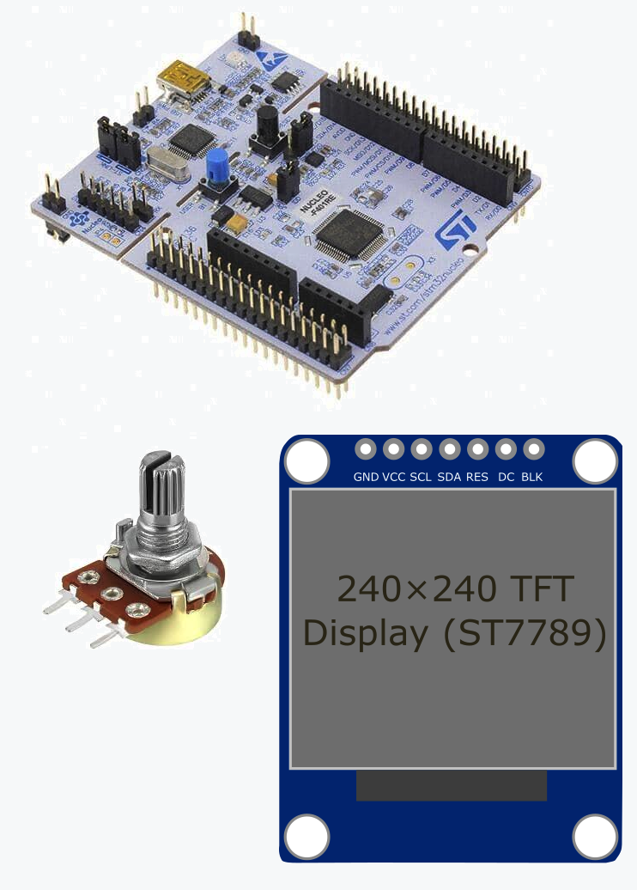
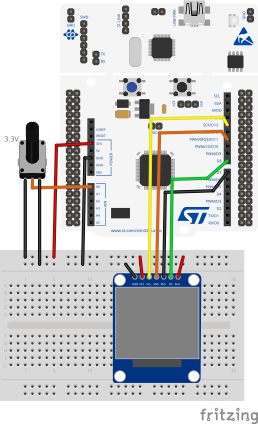
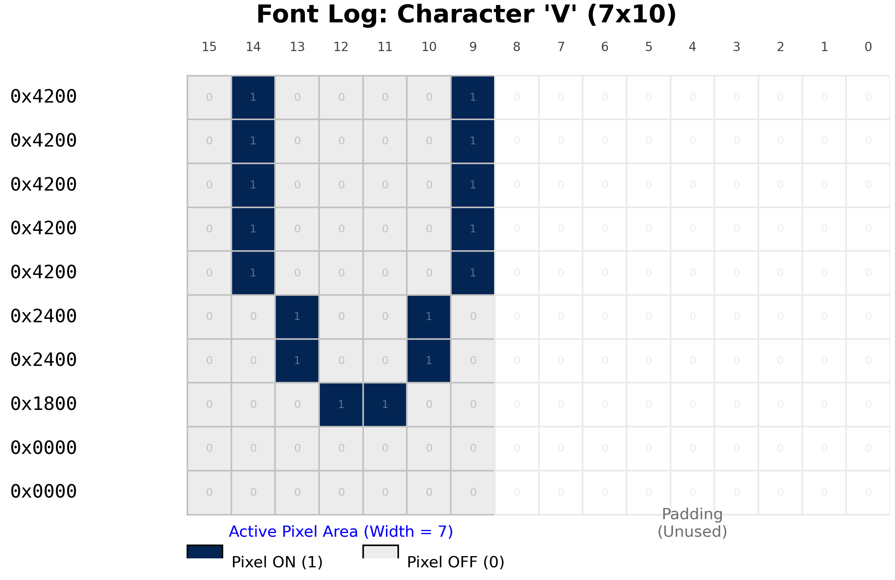
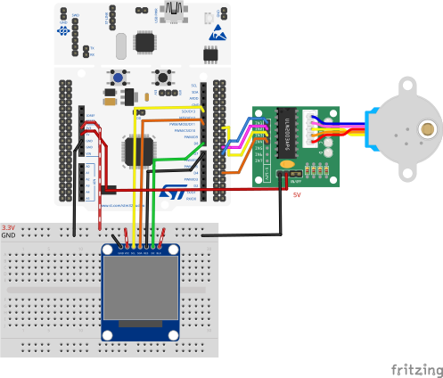
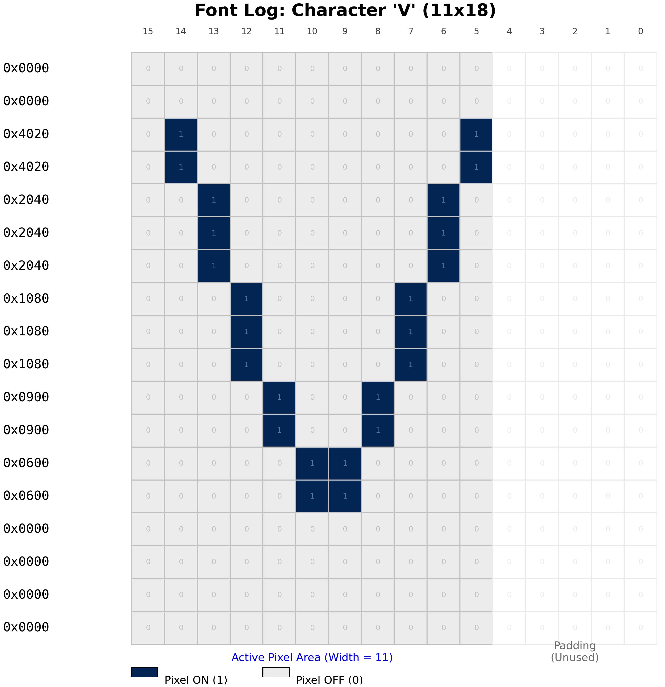

EE5203 Microprocessors
2025-12-08
st7789.c, st7789.h, fonts.c, fonts.h (download from course page)
st7789.h and st7789.c — Download from course page.| Function | What It Does |
|---|---|
ST7789_Init() |
Initialize display |
ST7789_FillScreen(color) |
Fill entire screen with a color |
ST7789_FillRect(x, y, w, h, color) |
Draw a filled rectangle |
ST7789_WriteString(x, y, str, font, color, bgcolor) |
Draw a string of text |
Available Colors: Black, White, Red, Green, Blue, Yellow, Cyan
HAL_SPI_Transmit() (blocking) wastes huge CPU cycles.0x2000... and shove them into SPI1->DR register.”main() immediately to compute the next batch of pixels.Transfer Complete) when done.| TFT Pin | Nucleo Pin | Function |
|---|---|---|
| VCC | 3.3V | Power |
| GND | GND | Ground |
| SCL/SCK | PA5 | SPI Clock |
| SDA/MOSI | PA7 | SPI Data |
| DC | PA9 | Data/Command |
| RES/RST | PA8 | Reset |
| BLK | 3.3V | Backlight |
Note: Your module has CS internally tied to GND (always selected).

TFT_Display_Lab → Nucleo-F401RESPI1_TX → Memory to PeripheralTFT_RSTTFT_DCDMA2 Stream3 global interrupt.ioc and click Generate Codest7789.c and st7789.h from course page.Core/Src and Core/Inc folders.In main.c, add at the top:
In main.c, inside USER CODE BEGIN 2:
/* USER CODE BEGIN 2 */
ST7789_Init(); // Initialize display
ST7789_FillScreen(ST7789_BLACK); // Clear screen to black
HAL_Delay(500);
// Draw three colored rectangles
ST7789_FillRect(20, 20, 80, 80, ST7789_RED);
ST7789_FillRect(80, 80, 80, 80, ST7789_GREEN);
ST7789_FillRect(140, 140, 80, 80, ST7789_BLUE);
/* USER CODE END 2 */
uint16_t rows, but with more padding (Bits 8-0 unused)./* USER CODE BEGIN WHILE */
// Clear the screen from Task 1 (Remove rectangles)
ST7789_FillScreen(ST7789_BLACK);
char msg[16];
while (1) {
// Read potentiometer
HAL_ADC_Start(&hadc1);
HAL_ADC_PollForConversion(&hadc1, 100);
uint16_t adcValue = HAL_ADC_GetValue(&hadc1);
// Calculate bar width (0-200 pixels based on 0-4095 ADC range)
uint16_t barWidth = (adcValue * 200) / 4095;
// Clear bar area
ST7789_FillRect(20, 100, 200, 30, ST7789_BLACK);
// Draw bar
ST7789_FillRect(20, 100, barWidth, 30, ST7789_CYAN);
// Calculate Voltage
float voltage = (adcValue * 3.3) / 4095.0;
// Display Voltage Text
ST7789_FillRect(20, 150, 200, 20, ST7789_BLACK); // Clear text area
sprintf(msg, "Volt: %.2f V", voltage);
ST7789_WriteString(20, 150, msg, Font_11x18, ST7789_WHITE, ST7789_BLACK);
HAL_Delay(50);
}
/* USER CODE END WHILE */Make the bar change color based on level:
while (1) {
HAL_ADC_Start(&hadc1);
HAL_ADC_PollForConversion(&hadc1, 100);
uint16_t adcValue = HAL_ADC_GetValue(&hadc1);
uint16_t barWidth = (adcValue * 200) / 4095;
// Choose color based on level
uint16_t color;
if (adcValue < 1365) color = ST7789_GREEN; // Low
else if (adcValue < 2730) color = ST7789_YELLOW; // Medium
else color = ST7789_RED; // High
ST7789_FillRect(20, 100, 200, 30, ST7789_BLACK);
ST7789_FillRect(20, 100, barWidth, 30, color);
HAL_Delay(50);
}Ensure you have fonts.h and stdio.h included in main.c.

Wave Drive
| Stp | IN1 | IN2 | IN3 | IN4 |
|---|---|---|---|---|
| 1 | 1 | 0 | 0 | 0 |
| 2 | 0 | 1 | 0 | 0 |
| 3 | 0 | 0 | 1 | 0 |
| 4 | 0 | 0 | 0 | 1 |
Full Step
| Stp | IN1 | IN2 | IN3 | IN4 |
|---|---|---|---|---|
| 1 | 1 | 1 | 0 | 0 |
| 2 | 0 | 1 | 1 | 0 |
| 3 | 0 | 0 | 1 | 1 |
| 4 | 1 | 0 | 0 | 1 |
Half Step
| Stp | IN1 | IN2 | IN3 | IN4 |
|---|---|---|---|---|
| 1 | 1 | 0 | 0 | 0 |
| 2 | 1 | 1 | 0 | 0 |
| 3 | 0 | 1 | 0 | 0 |
| 4 | 0 | 1 | 1 | 0 |
| 5 | 0 | 0 | 1 | 0 |
| 6 | 0 | 0 | 1 | 1 |
| 7 | 0 | 0 | 0 | 1 |
| 8 | 1 | 0 | 0 | 1 |
/* USER CODE BEGIN 0 */ (before main()):// Define Pins for ULN2003
#define IN1_PIN GPIO_PIN_1
#define IN2_PIN GPIO_PIN_2
#define IN3_PIN GPIO_PIN_12
#define IN4_PIN GPIO_PIN_13
#define STEPPER_PORT GPIOB
void Stepper_Set(uint8_t i1, uint8_t i2, uint8_t i3, uint8_t i4) {
HAL_GPIO_WritePin(STEPPER_PORT, IN1_PIN, i1);
HAL_GPIO_WritePin(STEPPER_PORT, IN2_PIN, i2);
HAL_GPIO_WritePin(STEPPER_PORT, IN3_PIN, i3);
HAL_GPIO_WritePin(STEPPER_PORT, IN4_PIN, i4);
}
// Wave Drive (One phase on)
void Stepper_WaveDrive(int step) {
switch(step % 4) {
case 0: Stepper_Set(1, 0, 0, 0); break;
case 1: Stepper_Set(0, 1, 0, 0); break;
case 2: Stepper_Set(0, 0, 1, 0); break;
case 3: Stepper_Set(0, 0, 0, 1); break;
}
}
// Full Step (Two phases on - Higher Torque)
void Stepper_FullStep(int step) {
switch(step % 4) {
case 0: Stepper_Set(1, 1, 0, 0); break;
case 1: Stepper_Set(0, 1, 1, 0); break;
case 2: Stepper_Set(0, 0, 1, 1); break;
case 3: Stepper_Set(1, 0, 0, 1); break;
}
}
// Half Step (Smoother, double resolution)
void Stepper_HalfStep(int step) {
switch(step % 8) {
case 0: Stepper_Set(1, 0, 0, 0); break;
case 1: Stepper_Set(1, 1, 0, 0); break;
case 2: Stepper_Set(0, 1, 0, 0); break;
case 3: Stepper_Set(0, 1, 1, 0); break;
case 4: Stepper_Set(0, 0, 1, 0); break;
case 5: Stepper_Set(0, 0, 1, 1); break;
case 6: Stepper_Set(0, 0, 0, 1); break;
case 7: Stepper_Set(1, 0, 0, 1); break;
}
}int mode = 0; // 0=Stop, 1=Wave, 2=Full, 3=Half
int step = 0;
char msg[32];
while (1) {
// 1. Check Button to Cycle Modes
if (HAL_GPIO_ReadPin(GPIOC, GPIO_PIN_13) == GPIO_PIN_RESET) {
mode++; // Next Mode
if (mode > 3) mode = 0; // Wrap around
HAL_Delay(200); // Debounce
// Update Display ONCE on change
ST7789_FillRect(20, 150, 200, 40, ST7789_BLACK); // Clear text area
if (mode == 0) {
ST7789_WriteString(20, 150, "MOTOR: STOPPED", Font_11x18, ST7789_RED, ST7789_BLACK);
} else if (mode == 1) {
ST7789_WriteString(20, 150, "MODE: WAVE DRIVE", Font_11x18, ST7789_GREEN, ST7789_BLACK);
} else if (mode == 2) {
ST7789_WriteString(20, 150, "MODE: FULL STEP", Font_11x18, ST7789_YELLOW, ST7789_BLACK);
} else if (mode == 3) {
ST7789_WriteString(20, 150, "MODE: HALF STEP", Font_11x18, ST7789_CYAN, ST7789_BLACK);
}
}
// 2. Drive Motor based on Mode
switch (mode) {
case 0: Stepper_Set(0, 0, 0, 0); break; // Stop
case 1: Stepper_WaveDrive(step++); break;
case 2: Stepper_FullStep(step++); break;
case 3: Stepper_HalfStep(step++); break;
}
// Speed Control Delay
HAL_Delay(3);
}main.c file.
uint16_t array).if ((row_data << col) & 0x8000) { DrawPixel(); }